Professional Attire
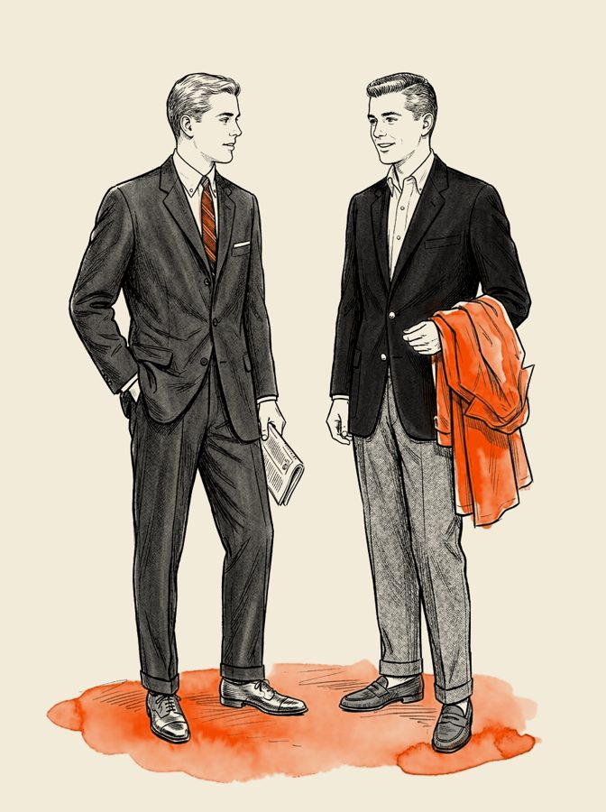
Mastering the local uniform helps you accelerate your career, win friends, and influence people. A DC-appropriate professional wardrobe can be had for less than $3,000 if you size yourself correctly, stay disciplined, and carefully select pieces that work well together. Dressing seriously is a key first step to you being treated as a serious person.
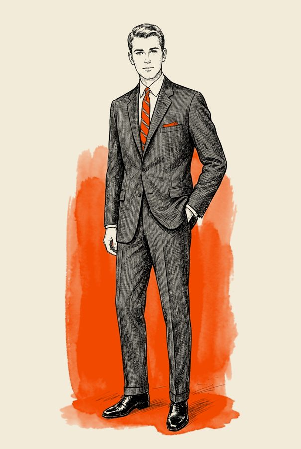
The Suit
Your first suits should be a versatile foundation. You can wear them to almost any professional meeting or presentation (excluding a black tie event, where you should wear a tuxedo). Get this right, and the rest will follow. Always wear them with a tie.
Color & Pattern. Your first two suits should be solid Navy and Gray (Medium to Charcoal). Additional suits could be navy or charcoal pinstripes, gray glen check, or dark brown. Avoid: Black, loud patterns like windowpane, textured fabrics, and light colors.
Fabric. Stick to 100% Wool (Twill, Birdseye, or Hopsack). Tip: Tropical Wool is ideal for DC’s Summer heat and humidity. Avoid: Polyester blends, cotton, or non-worsted wool.
The Cut. Opt for a classic full cut rather than “skinny” fits (you should look like Cary Grant, not Andrew Tate).
Jacket. Two-button or 3-roll-2 closure. Look for a soft shoulder and double vents. Opt for notch or peak lapels. Tailor sleeves to expose ¼″ of your shirt cuffs.
Trousers. High-rise waist with a slight break at the hem.
Pockets. Flap pockets are best. Patch or jetted pockets don’t belong on a business suit. Ticket pockets are old fashioned.
Details. Avoid “trendy” details like high-contrast button thread. Other details like pleats, hem style, or lining fabric are based on your taste. Look for natural horn buttons.
Construction. Seek out half or fully canvased construction. Avoid: Fused (glued) jackets for longevity, breathability, and drape. Heavily padded shoulders.
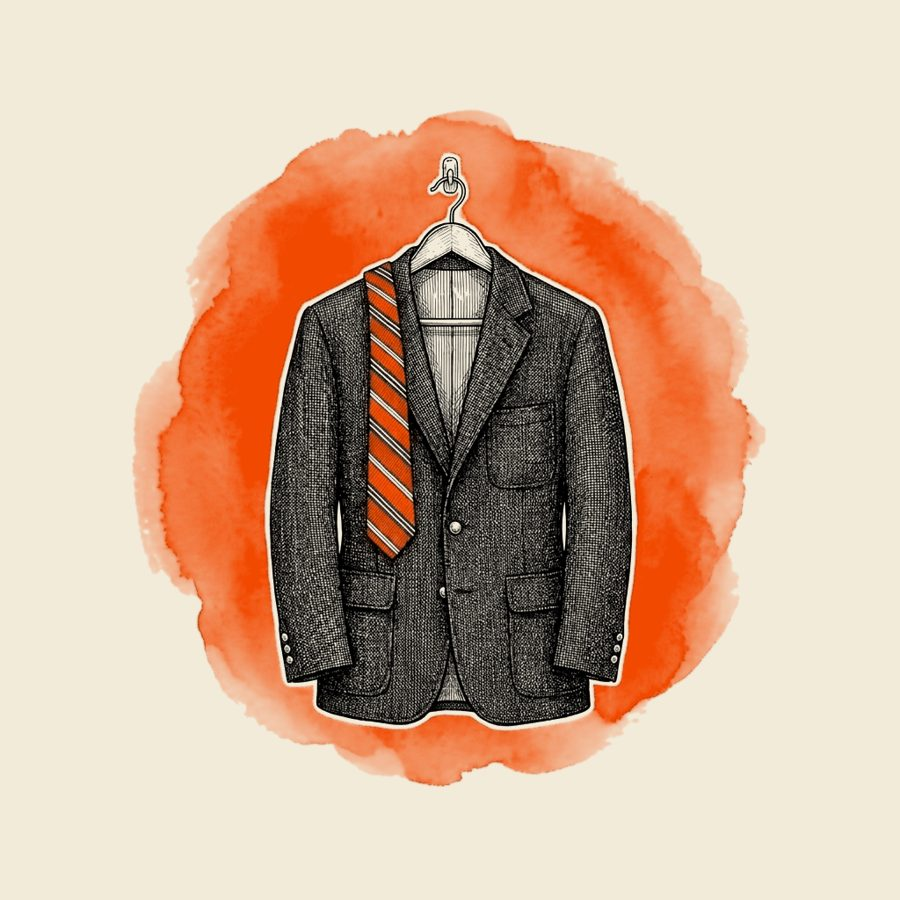
Once you acquire the foundation, you can branch out in other directions. A good third item to acquire is a navy blazer with gold buttons, as it will go with everything you own.
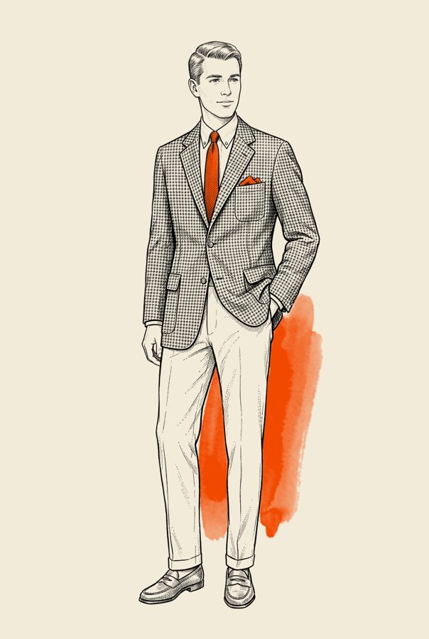
The Sport Coat
Sport coats and blazers may be used for less formal professional situations (but you should always wear a suit and tie to government meetings). Sport coats can be worn with or without a tie, and with suit trousers, more casual trousers, chinos, or dark jeans.
Color & Pattern. Opt for a solid navy blazer with brass buttons, or a sport coat which can be in a range of colors and patterns, from solid tan camel hair, to houndstooth or windowpane. Avoid: suiting fabrics (except with a navy blazer).
Fabric. Stick to Silk, Wool, or Linen and opt for a more textured weave. Tip: Linen (or a wool/silk/linen blend) is great for DC’s summer heat and humidity. Avoid: Polyester blends, suiting fabrics.
The Cut. Opt for a classic full cut.
Jacket. Two-button, 3-roll-2 closure, or 6 button double breasted. Look for a soft shoulder and double vents. Opt for notch or peak lapels (peak with double breasted). Tailor sleeves to expose ¼″ of your shirt cuffs.
Pockets. Patch or flap pockets.
Construction. Half or fully canvased construction. Avoid: Fused (glued) jackets for longevity, breathability, and drape. Heavily padded shoulders.
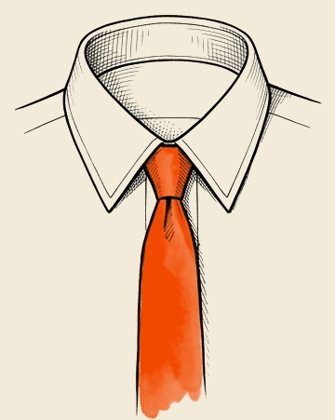
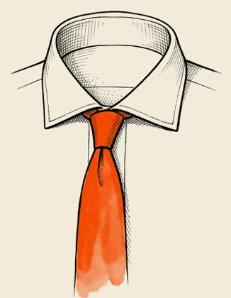
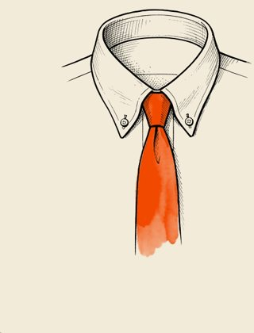
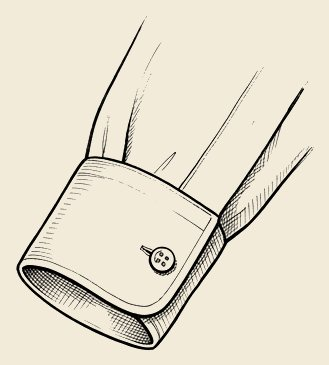
The Shirt
Keep it simple. Focus on quality and fit.
Color & Pattern. Stick to solid White or Mid-Blue. No patterns to start.
Fabric. 100% Cotton (Oxford cloth, twill, or broadcloth). Avoid: Herringbone, flannel, chambray, etc.
Collar & Cuff. Regular or semi-spread collars are most versatile. Stick to barrel cuffs. If you’re inspired by American Ivy style, you can get button-down collars (but make sure they’re big enough to accommodate a tie – Brooks Brothers is good for this)
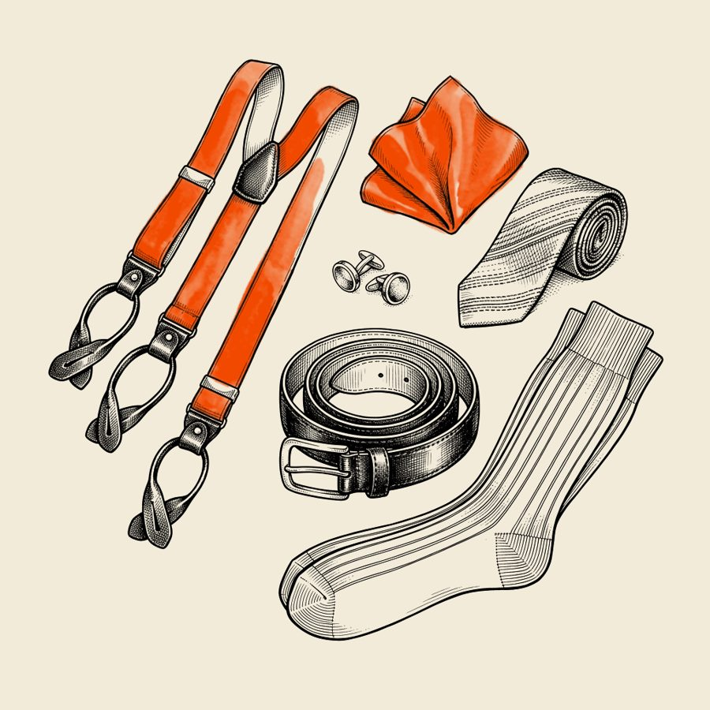
Accessories
The details are where most people make mistakes. Opt for conservative options first; once you know the rules, you know how to break them well. Suggested brands can be found new or vintage – the savvy shopper knows how to carefully filter eBay, Poshmark, Grailed, and in-person stores to score good deals on pieces they otherwise couldn’t afford.
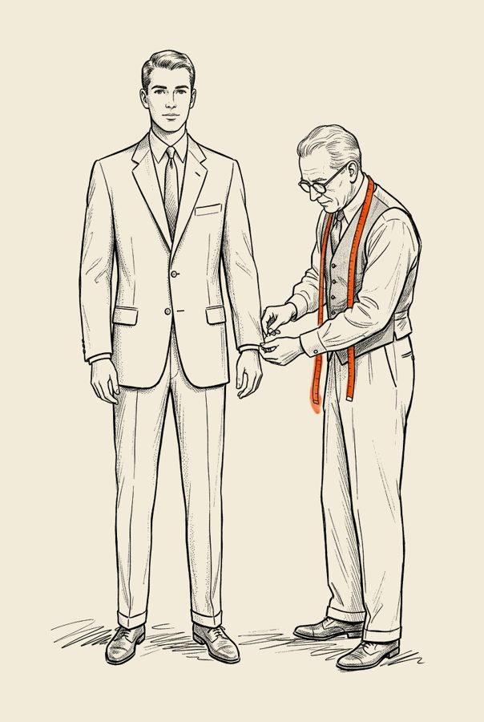
Style Tips
Fit Is King. Correct tailoring and alterations are more important than the brand or price. Even an inexpensive suit looks professional if it fits properly.
Bottom Button. Never button the bottom button of your suit jacket.
Plan for Summer. For DC’s heat, look for half-canvased and half-lined jackets made from tropical wool.
Silhouette. Consider side tabs or button-on braces instead of a belt. They provide a cleaner line and are more comfortable.
Budgeting. You don’t need a massive budget. High-quality items can be found vintage and tailored to look top-tier.
Breaking Rules. The best dressed people often break the rules. Don’t attempt this until you have mastered the basics.
Example Wardrobes
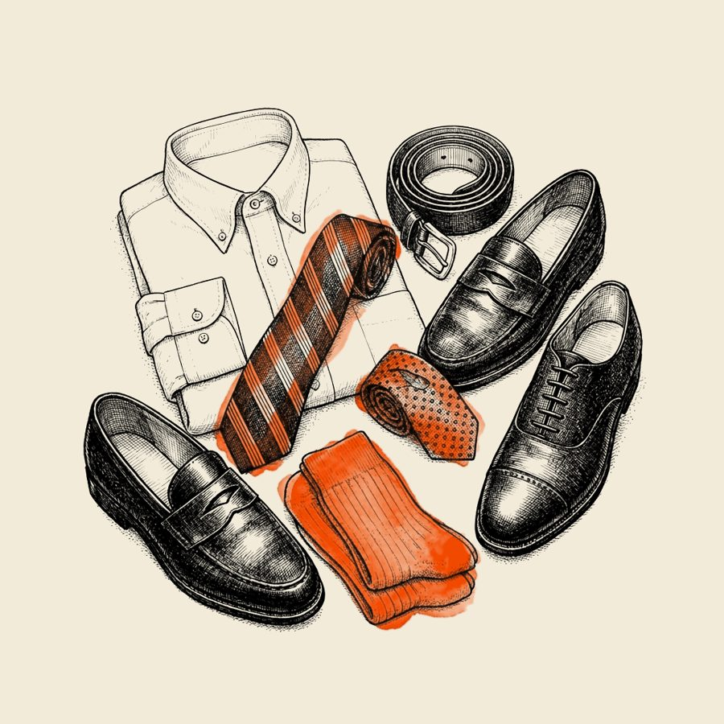
Basics
$3,000 BudgetBusiness suits
Navy blazer
Casual pants
Dress shirts
Ties
Socks
Coats
Accessories
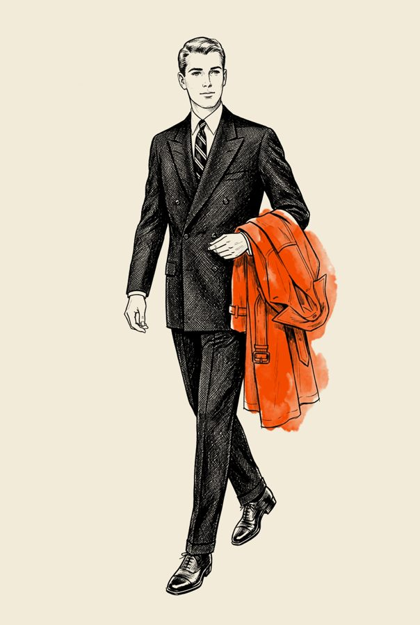
Expanded Basics
$6,500 BudgetBusiness suits
Navy blazer
Casual pants
Dress shirts
Ties
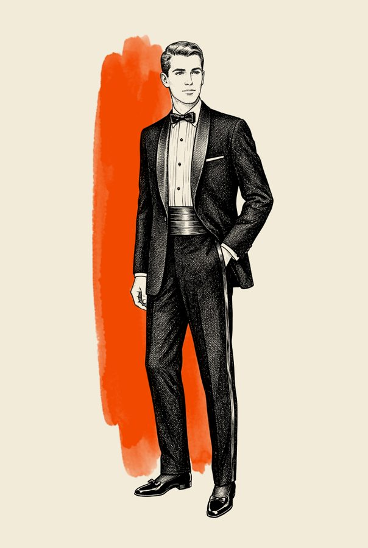